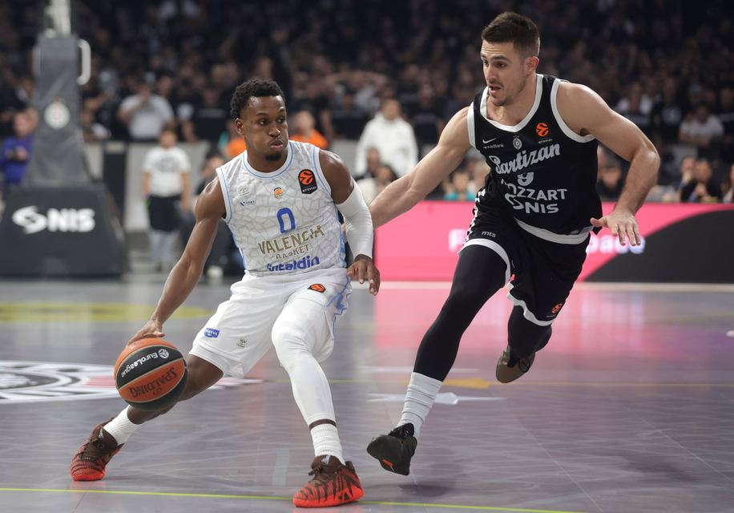

TJ Shorts, el jugador más bajo de la Euroliga aúpa a lo más alto al Valencia Basket

El base, el baloncestista de menor estatura en la competición continental, 1,75m, lleva al liderato a un conjunto naranja muy renovado
El jugador más bajo de la Euroliga está en lo más alto. El base TJ Shorts, de 29 años y 1,75m, ha conducido al Valencia Basket al liderato de la competición europea con nueve victorias en 12 encuentros, igual que el Olympiacos. El estadounidense, nacionalizado macedonio, es la cara nueva más destacada de un renovado equipo naranja que este verano fue desmontado después de ganar la Liga ACB y alcanzar la pasada Final Four: nueve salidas, entre ellas las de piezas clave como De Larrea, Jean Montero y Pradilla, y sobre todo el entrenador Pedro Martínez, y 10 fichajes, con TJ Shorts y Mirotic como estrellas principales y Xavi Albert como técnico debutante. Lesionado el ala-pívot montenegrino,…